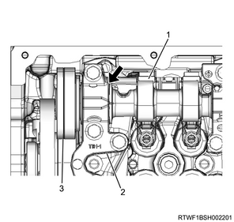
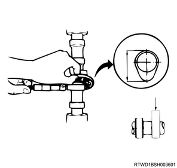
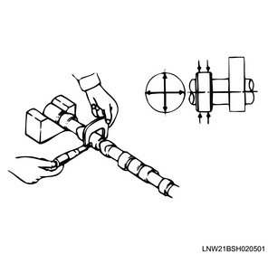
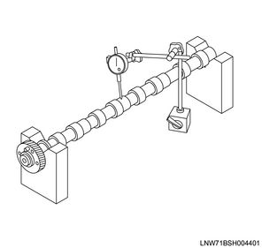
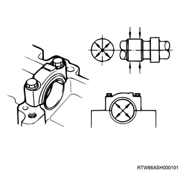

1. Inspect the camshaft.
Note
1. Measure the clearance using a feeler gauge.
Note
Standard： 0.050 to 0.130 mm { 0.0020 to 0.0051 in } Inlet side
Limit： 0.25 mm { 0.010 in } Inlet side
Standard： 0.050 to 0.130 mm { 0.0020 to 0.0051 in } Exhaust side
Limit： 0.25 mm { 0.010 in } Exhaust side
Caution

2. Measure worn using the micrometer.
Note
Standard： 40.8 mm { 1.61 in } Inlet side
Limit： 39.8 mm { 1.57 in } Inlet side
Standard： 40.8 mm { 1.61 in } Exhaust side
Limit： 39.8 mm { 1.57 in } Exhaust side

3. Measure the camshaft journal using the micrometer.
Note
Standard： 29.909 to 29.930 mm { 1.1775 to 1.1783 in } Inlet side
Limit： 29.809 mm { 1.1736 in } Inlet side
Standard： 29.909 to 29.930 mm { 1.1775 to 1.1783 in } Exhaust side
Limit： 29.809 mm { 1.1736 in } Exhaust side
Note
Limit： 0.05 mm { 0.0020 in } Inlet side
Limit： 0.05 mm { 0.0020 in } Exhaust side
Note

4. Put the camshaft on the V-block.
5. Measure fluctuation using a dial gauge.
Note
Limit： 0.05 mm { 0.002 in } Inlet side
Limit： 0.05 mm { 0.0020 in } Exhaust side

6. Measure the camshaft bearing using a cylinder gauge.
Note
7. Calculate the clearance from measured value.
Note
Standard： 0.070 to 0.112 mm { 0.00276 to 0.00441 in } Inlet side
Limit： 0.15 mm { 0.0059 in } Inlet side
Standard： 0.070 to 0.112 mm { 0.00276 to 0.00441 in } Exhaust side
Limit： 0.15 mm { 0.0059 in } Exhaust side
